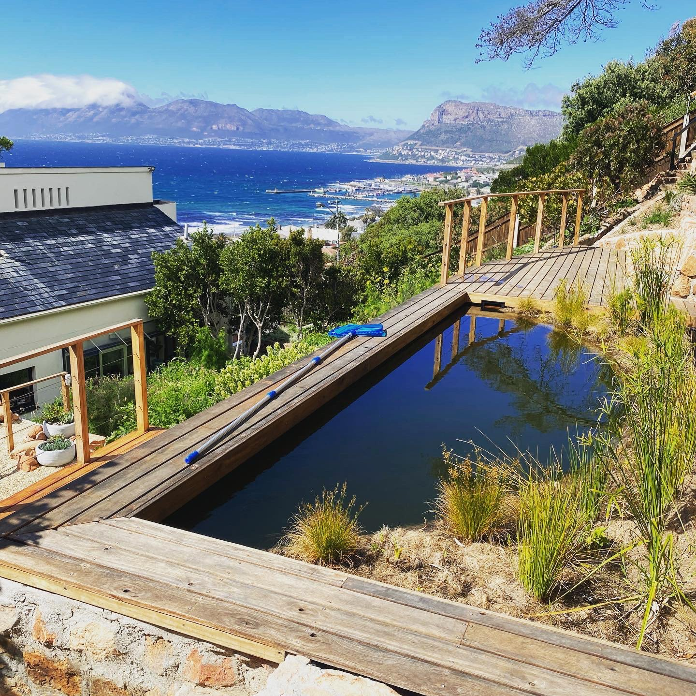

When converting an existing chlorine pool to a natural pool one essentially has 2 options, you can either create a cost-effective floating wetland inside the pool OR you can construct a permanent gravel wetland inside and/or outside the pool.
A floating wetland (as the name suggests) is a floating structure about 150mm thick that can be used as a planting medium for aquatic plants. In time the plant’s roots grow 1 meter deep underneath the structure and this is where all the biological filtration happens. Floating wetlands utilize just the plant’s roots to create a biofilm matrix that cleans the water. 35% of the pool’s surface area needs to be allocated to the floating wetland.
AVERAGE COST R20 000 - R80 000 The costs are much lower as one can literally install the floating wetlands with the water in the pool. You can retain the same plumbing, sand filter and kreepy krawley. It is advised to put a low-energy pump in to circulate the water 24/7 and this can be done relatively simply.
by
originally published on www.leafandstone.co.za